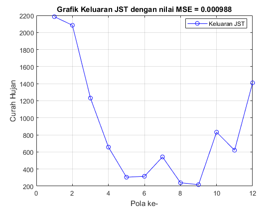

clc; clear; close all;
filename = 'data_curahHujan.xlsx';
sheet = 2;
xlRange = 'C4:O15';
Data = xlsread(filename, sheet, xlRange);
data_latih = Data(:,1:12)';
target_latih = Data(:,13)';
[m,n] = size(data_latih);
net = newff(minmax(data_latih),[10 1],{'logsig','purelin'},'traingdx');
net.performFcn = 'mse';
net.trainParam.goal = 0.001;
net.trainParam.show = 20;
net.trainParam.epochs = 1000;
net.trainParam.lr = 0.1;
[net_keluaran,tr,Y,E] = train(net,data_latih,target_latih);
bobot_hidden = net_keluaran.IW{1,1};
bobot_keluaran = net_keluaran.LW{2,1};
bias_hidden = net_keluaran.b{1,1};
bias_keluaran = net_keluaran.b{2,1};
jumlah_iterasi = tr.num_epochs;
nilai_keluaran = Y;
nilai_error = E;
error_MSE = (1/n)*sum(nilai_error.^2);
save net.mat net_keluaran
hasil_latih = sim(net_keluaran,data_latih);
max_data = 2590;
min_data = 0;
hasil_latih = ((hasil_latih-0.1)*(max_data-min_data)/0.8)+min_data;
figure,
plotperform(tr)
figure,
plot(hasil_latih,'bo-')
hold on
grid on
title(strcat(['Grafik Keluaran JST dengan nilai MSE = ',...
num2str(error_MSE)]))
xlabel('Pola ke-')
ylabel('Curah Hujan')
legend('Keluaran JST','Target','Location','Best')
Warning: NEWFF used in an obsolete way.
See help for NEWFF to update calls to the new argument list.
Warning: Ignoring extra legend entries.
